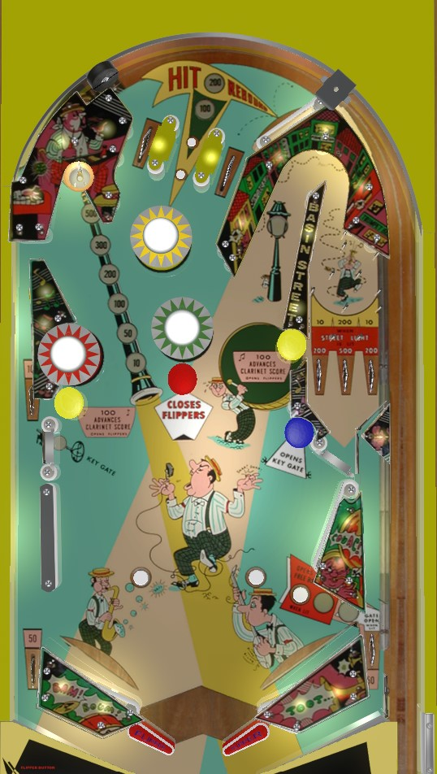

If the Clarinet (upper left saucer) value is low, shoot the red mushroom bumper to zip the flippers together, then shoot the yellow mushroom bumpers to raise the Clarinet value and reopen the flippers; repeat until the Clarinet value is maxed at 500 points. If the Clarinet value is maxed out, shoot the upper left saucer to collect it from the right flipper, and from the left flipper, shoot the Basin Street bagatelle playfield, but only if the gate at the bottom redirects the ball to the main playfield rather than the right out lane. 500-point collects of the Clarinet value advance the Dixieland letters carryover award toward replay or extra ball.
The two outer top lanes score 10 points, and the center top lane scores 100 points. Hitting the wall switch that is pointed to by the arrow labelled Rebound will open the Key Gate on the middle left and light the center top lane for 200 points instead of 100. Regardless of which top lane the ball goes through, the center lane's value will be reset to 100 points when any bumper is triggered.
The Clarinet value starts at 10 points. Hitting any yellow mushroom bumper opens the flippers if they have been zipped together and increases the Clarinet value in the sequence 10-50-100-200-300-500. The red mushroom bumper closes the zipper flippers, temporarily blocking off a center drain. Shooting the left saucer scores the current Clarinet value and resets it back to 10 points. Collecting the maximum value of 500 points from the Clarinet saucer lights one letter in Dixieland on the backglass; depending on game settings, spelling either Dixie or Dixieland can earn an extra ball, a special, or a "super" (I do not know what the "super" means). The Clarinet saucer value never resets on its own, persisting across players and games until collected, and the lit Dixieland letters that progress toward extra ball or special are likewise a carryover award that can be worked toward over multiple games.
If the Clarinet value is 100, 200, or 300 points, and the zipper flippers are currently open, the lower rightmost rollover button will open the lower right gate, which redirects the ball back to the shooter lane for a replunge and closes once used. Zipping the flippers together at any time or draining the current ball will also close the lower right gate.
Basin Street is a hook-shaped lane that leads to a bagatelle-style pinboard playfield. The three lanes at the end of the playfield score 10-200-10 points from left to right. If the Clarinet value is at least 300 points, the Streetlight near the entrance to the hook lane will be lit, indicating that the lanes at the end of the pinboard score 200-500-200 points instead. Collecting the 500 points from Basin Street also adds a letter in Dixieland and resets the Clarinet value, just the same as if the left saucer had been scored.
Below the scoring lanes in Basin Street is the middle right gate. When this gate is closed, a ball exiting Basin Street is redirected back to the playfield. If this gate is open, though, a ball leaving Basin Street will be redirected to the right out lane, where it will drain and end the player's turn unless the lower right gate is open. The two unlabelled rollover buttons near-ish to the slingshots toggle whether the middle right gate is open or closed. Take care not to shoot for Basin Street unless either the middle right gate is closed or the lower right gate is open to ensure that you can continue playing your ball after leaving the bagatelle area.
The left out lane on Dixieland extends most of the way up the playfield, with an entrance near the bumper area. The Key Gate, halfway up the table, redirects a ball in the upper part of the left out lane back to the table if it is open, and it closes once used. The Key Gate is opened by the Rebound switch at the top of the table or by the blue mushroom bumper. It closes once used or when the ball drains.
There are no in lanes. Flippers back up directly to the slingshots. Two-inch mini flippers are used. The red mushroom bumper zips the flippers together, temporarily blocking off the center drain as a reward. Yellow mushroom bumpers reopen the flippers. The slingshots are much more shallow then many conventional slingshots. Out lanes score 50 points. There is a gate in the right out lane that can redirect a right out lane ball back to the shooter lane as described in the Clarinet value section above.
There is no end of ball bonus. Extra balls and specials are only available as possible rewards for collecting enouh 500-point left saucers and Basin Street lanes to spell Dixie or Dixieland, depending on operator settings.